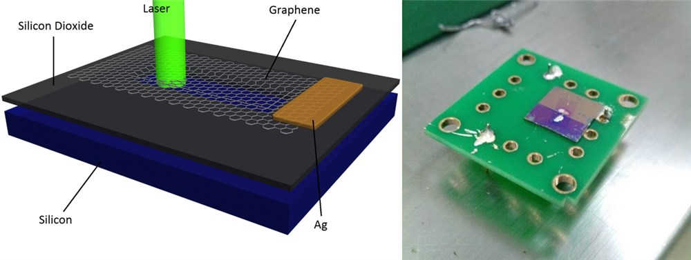

GFET Project [PDF(Chinese)]
This work is an undergraduate student physical experiment project supported by School of Physical Sciences of USTC in fall 2012. It is a team work by me and four co-workers, they are: Yuan Cao, Qiao Kong, Xingzhou Tu and Lu Qiu. Most of the experiment is carried out in HFNL and the Center of Physical Experiment of USTC.
The goal of this project is to make graphene-based field-effect transistors (GFET), for its potentially high speed and density. The idea is inspired by the work of Yang, et al. in 2012:
GFET is a type of FET device using the Schottky barrier between graphene and silicon to a conduct, which is modulated by the voltage on the top gate. Graphene has very high electron mobility, GFET is likely to achieve high operating speed. The GFET could be used in a float-gate FET to make a memory device.
Graphene is prepared by Chemical Vapor Deposition (CVD) of methane on copper, and then transferred to monocrystalline substrate with silicon dioxide layer on the surface using the PMMA method. The silicon (100) are N-type doped with doping density of about 1016, with 500nm SiO2 layer.
(A) copper with graphene layer (B) silicon surface after transfer under x100 microscope, graphene layer is indicated
Raman spectroscopy is used to characterize the graphene both on copper and silicon, which indicates that the graphene is single layer.
Raman spectroscopy of graphene layer on copper and silicon
Two drops of silver glue are added onto the graphene, another added to the silicon substrate as electrode.
The schematic diagram and photo of the GFET
Then the I-V characteristic versus the gate voltage is measured. The result are shown below.
Working curve of the GFET
An Additional Optical Sensor Project
The monocrystalline is cut into 1 CM x 1 CM pieces, and a small hole etched by hydrofluoric acid, so the SiO2 is dissolved and silicon exposed. Then graphene is transfered onto the boundary. Two drops of silver glue are added both on the graphene and silicon to act as the electrodes.

The schematic diagram and photo of the Sensor
Due to the Schottky barrier on the graphene-silicon interface, light with sufficient energy would excite electrons and the remaining holes are swept in different directions by the built-in electric field of the depletion region, which creates an electric current (known as the Photovoltage Effect). This current could be used as the indicator of light. The I-V curve of this device in darkness and semiconductor laser are shown below.
Photovoltage Effect